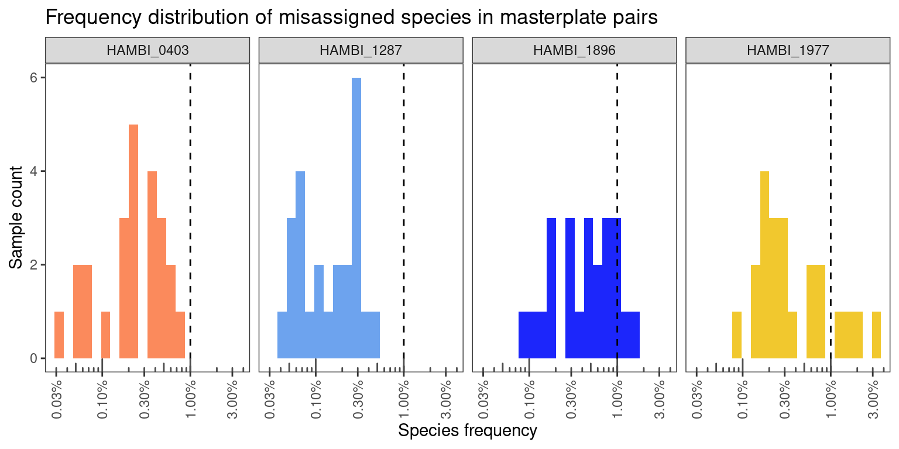
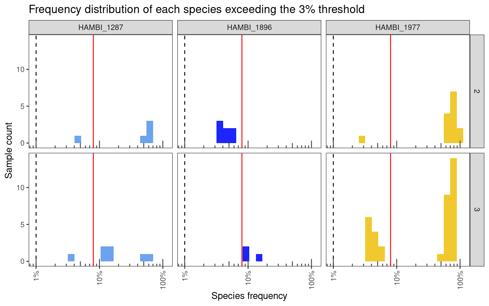
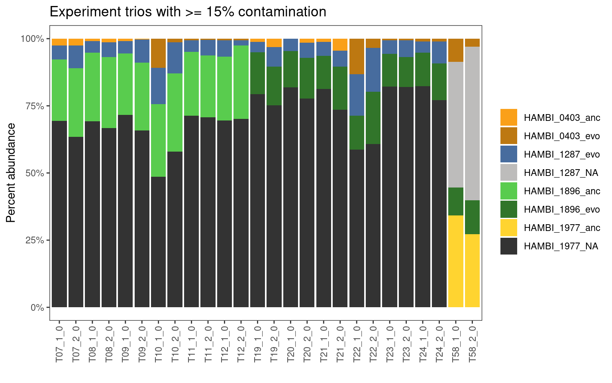

Formatting Rbec output from 2024-07-11 sequenced by BTK Turku using custom HAMBI Illumina v3 primers
1 Setup
1.1 Libraries
1.2 Global variables
Show/hide code
data_raw <- here::here("_data_raw", "communities", "20240711_BTK_illumina_v3")
data <- here::here("data", "communities", "20240711_BTK_illumina_v3")
amplicontar <- here::here(data_raw, "rbec_output.tar.gz")
# make processed data directory if it doesn't exist
fs::dir_create(data)
# create temporary location to decompress
tmpdir <- fs::file_temp()2 Read metadata
3 Read Rbec raw counts tables
3.1 Untar Rbec output tarball
3.2 Setup directory structure
3.3 Read
Show/hide code
straintabs <- paste0(samppaths, "/strain_table.txt") %>%
set_names(sampnames) %>%
map_df(
read_tsv,
skip = 1,
col_names = c("rRNA16S_locus","count"),
show_col_types = FALSE,
.id = "sample") %>%
# naming scheme inconsistent for one sample
mutate(sample = if_else(sample == "P2_s_0", "P02_s_0", sample))3.4 Clean up
4 Format
Show/hide code
straintabs_norm <- straintabs %>%
# Calls function that normalize counts by 16S copy number
normalize_by_copy() %>%
# Calls function that completes all combinations of 23 species
# this is important because some species go extinct that should be in the samples
# and we need to have those in the final table
complete_combos()Make final table
Show/hide code
# Later we will take advantage of the fact that for species not supposed to be
# in a sample the prior left_join will have filled the evo_hist category with an
# NA. We can then filter using this NA value
finaltable <- left_join(straintabs_norm, mddf, by = join_by(sample)) %>%
left_join(spdf, by = join_by(community_id, strainID)) %>%
group_by(sample) %>%
dplyr::select(-genus, -species) %>%
mutate(f_raw = count_correct/sum(count_correct),
sample_tot_raw = sum(count_correct)) %>%
ungroup() %>%
relocate(sample_tot_raw, f_raw, target_f, evo_hist, .after = count_correct)5 Analysis
Let’s quickly compare and look the at number of reads from the different kinds of experiment categories. Negative controls are samples from the experiment that contained growth medium but no cells. We included them to make sure that there was not contamination between wells during the experiment. Positive controls here contain defined mixtures of the 4 species used in this experiment. These positive control samples were extracted using Qiagen DNeasy kit, with the idea that we would use them to calibrate the remaining experimental samples which were all extracted using a simplified boil-prep methodology. The workflow in this document does this and it shows that the community composition of the same sample extracted using Qiagen or the boil-prep is not drastically different. Thus, we decided to forgo the hassle and expense of doing these calibrations for the remaining samples, but that information is there to demonstrate that our custom extraction proceedure is robust. Experiment samples are those that came from the actual experiment, and masterplate samples are the defined mixtures we made to inoculate the experiment. We sequenced these masterplates so that we would have T0 information for each experimental treatment.
Show/hide code
finaltable %>%
dplyr::select(sample, sample_tot_raw, community_type) %>%
distinct() %>%
ggplot(aes(x = sample_tot_raw)) +
geom_histogram(bins = 20, aes(fill = community_type)) +
scale_x_log10() +
annotation_logticks(sides = "b", color="grey30") +
labs(y = "Sample count", x = "Total reads per sample") +
facet_wrap(~ community_type, scales="free_y")The smallest number of reads in the experimental samples is 137 and the smallest in the negative controls is 73. Clearly some of the experimental samples failed to sequence well. The mean number of reads in the experimental samples is 10240.64 and in the negative controls is 3447.5. The mean for the experimental samples is considerably higher than the mean for the negative controls.
Overall this looks really good. The masterplate samples and positive controls all seem to have succeeded. However, there appears to be a negative control or two which has ~ 10000 reads and so it might have been contaminated.
5.1 Negative controls
Lets check what species are contaminating negative controls. Most appear to be low abundance contaminants of species excluded from the experiment. Probably this is cross talk from the positive controls and other samples
Show/hide code
I am not sure where the off-target species are coming from because we did not include any positive community controls here. However, they are all very low abundance and so I think they are just noise. Also it is worth noting that HAMBI_1972 and HAMBI_1977 are the same genus so if some of the read qualities are crappy it could easily be missassigned.
Show/hide code
Show/hide code
This looks ok, but there are potentially some problems. Specifically, negative control replicates 2, 3, and 4 all have some contamination. neg_2_0 seems to be contaminated with HAMBI_1977, neg_3_0 with HAMBI_1287, and neg_4_0 with HAMBI_1977. However in the 5 remaining negative controls there is no contamination.
5.2 Positive controls
The positive controls should each have three species. In all cases the species that shouldn’t be there is very rare
Show/hide code
finaltable %>%
filter(str_detect(community_type, "^pos")) %>%
mutate(total_pos_controls = n_distinct(sample)) %>%
group_by(sample) %>%
mutate(f = round(f_raw*100, 1)) %>%
mutate(supposed_2_b_there = if_else(is.na(evo_hist), "no", "yes")) %>%
relocate(f, supposed_2_b_there) %>%
distinct(f, supposed_2_b_there, sample, strainID, count_correct, n_species, community_type,) %>%
filter(f > 0)This is also good - we detect all 3 species that should be there in the positive controls on each plate.
5.3 Misassigned reads
These libraries were only prepared with samples from Milla’s 4-species experiment with 403, 1287, 1896, and 1977 so any time species other than these show up is just an incorrect assignment by Rbec. Let’s check quickly how many of these there are…
Show/hide code
There is one or two incorrectly assigned reads here and there but this is just noise. We can safely exclude all reads not mapping to one of the focal species.
5.4 Samples with few total reads
Some of the experimental pairs had streptomycin concentrations higher than any of the species individually could tolerate. We would naively expect then that neither species would grow successfully in these samples and that the overall biomass would be very low, thus resulting in a low number of recovered reads from these samples.
To look into this. first let’s check which samples have very low OD600 in the endpoint samples.
We’ll filter out samples with an OD of less than 0.1 and also samples with fewer than 1000 reads. It is generally good practice to exclude samples with low number of reads.
Show/hide code
df <- left_join(finaltable, od,
by = join_by(community_id, n_species, transfers, strep_conc, replicate)) %>%
filter(transfers == 8) %>%
arrange(sample_tot_raw) %>%
arrange(OD) %>%
# filter only samples with OD < 0.1 or < 1000 total reads. 1000 read threshold
# was chose based on the first figure in this notebook
filter(OD < 0.1 | sample_tot_raw < 1000) %>%
filter(count_correct > 0)
lowread_samps <- df %>%
filter(sample_tot_raw < 3000 & community_type == "experiment") %>%
distinct(sample) %>%
pull(sample)
df %>%
distinct(sample, community_type, OD, sample_tot_raw)There are 10 experimental samples that have less than 1000 reads. 6 of those samples have low optical density which indicates nothing was growing there and that they should have low read number. 4 samples have normal optical density (~ 0.3) and these look to be samples that failed at the library preparation/sequencing step. Regardless, all these 10 samples will be excluded from the downstream analysis.
5.5 Filter to target species
Exclude positive and negative controls and also exclude species that are not in the focal 4
Show/hide code
finaltable_exp_mstr <- finaltable %>%
filter(community_type %nin% c("empty", "neg_ctrl", "pos_ctrl")) %>%
# also exclude samples with low reads
filter(sample %nin% lowread_samps) %>%
filter(strainID %in% c("HAMBI_0403", "HAMBI_1287", "HAMBI_1896", "HAMBI_1977")) %>%
group_by(sample) %>%
mutate(f_raw_targetsp = count_correct/sum(count_correct),
sample_tot_targetsp = sum(count_correct)) %>%
ungroup() %>%
relocate(c(sample_tot_targetsp, f_raw_targetsp), .after = f_raw)5.6 Masterplate samples
To set up this experiment, Milla combined the species in the planned proportions on a masterplate. Because this process was time consuming, the masterplate was stored at -80C after construction until the experiment start day when it was taken from the freezer and used to inoculate the experiment. Because Milla knows exactly which strains were added to the master plate and the plates were not allowed to grow, any strains in these samples that are not supposed to be there should be due to Illumina index cross talk and not true contamination. We can get a sense for the average index crosstalk rate from these samples and then draw a threshold of when to exclude likely false positives and when a positive is likely due to contamination.
5.6.1 Pairs
Overall the masterplate pairs look very good. There are no samples where a species that should not be there is present in high abundances. Any contamination (grey to black fill) is well under 5%.
Show/hide code
There are no samples with more than 4% of a species that shouldn’t be there
Show/hide code
Show/hide code
finaltable_exp_mstr %>%
filter(str_detect(community_type, "masterplate") & n_species == 2) %>%
filter(is.na(evo_hist)) %>%
filter(f_raw_targetsp > 0) %>%
contam_histogram(trans = TRUE, x = f_raw_targetsp) +
labs(x = "Species frequency", y = "Sample count") +
ggtitle("Frequency distribution of misassigned species in masterplate pairs")
5.6.2 Trios
Trio masterplates also look very good. There are some samples where a species that shouldn’t be there is > 3%, but these are always < 5% and there are no samples with major contamination. Importantly these all match the proportions that we used to start the experiment
Show/hide code
finaltable_exp_mstr %>%
filter(str_detect(community_type, "masterplate") & n_species == 3) %>%
# this is a dumb hack so that I don't have to plot all bars on the same axis
# but I can wrap them using a meaningless facet
group_by(sample) %>%
mutate(id = cur_group_id()) %>%
ungroup() %>%
mutate(facet = ntile(id, 4)) %>%
contaminated_barplot(threshold = 0, quartet = FALSE, y=f_raw_targetsp) +
ggtitle("All Masterplate trios") +
facet_wrap(~facet, scales="free_x", nrow=4) +
theme(
strip.background = element_blank(),
strip.text.x = element_blank()
)Show/hide code
finaltable_exp_mstr %>%
filter(str_detect(community_type, "masterplate") & n_species == 3) %>%
filter(is.na(evo_hist)) %>%
filter(f_raw_targetsp > 0) %>%
contam_histogram(trans = TRUE, x = f_raw_targetsp) +
labs(x = "Species frequency", y = "Sample count") +
ggtitle("Frequency distribution of misassigned species in masterplate trios")There are no samples with more than 3% of a species that shouldn’t be there
5.6.3 Masterplate Summary
Generally, the cross talk frequency is really good. For 3/4 species it is 1% or less which is more or less what you can expect when you are multiplexing libraries on an Illumina platform. Values greater than 1% are potentially indicative of a different problem, so 1977 requires a bit more investigation.
Show/hide code
It looks like all the “problematic” samples come from plates 7 and 8 in the library prep. Plate 8 only contains the masterplate samples from trios whereas plate 7 contains both masterplate and experimental samples. In Figure 2 it shows that HAMBI-1977 is very abundant in many of the samples so likely the “leaky” reads come disproportionately from HAMBI-1977 which is why its crosstalk threshold may be higher (Figure 1). Anyway, I don’t think this is a problem and that we can move forward with these samples. However, to define extinction/competitive exclusion we may need to use a higher threshold than 1% (e.g., 3% frequency) because over 3% we can reliably say that a species is present and it is not due to index cross talk.
5.7 Experimental samples
We may need to use a higher threshold than 1% (e.g., 3% frequency) because over 3% we can reliably say that a species is present and it is not due to index cross talk. Below I basically empirically chose 8% as a reasonable threshold value that includes the maximum number of samples with low-level contamination and exclude samples with very high contamination.
Show/hide code
finaltable_exp_mstr %>%
filter(str_detect(community_type, "experiment")) %>%
filter(is.na(evo_hist)) %>%
filter(f_raw > 0.03 ) %>%
contam_histogram(trans=TRUE, x = f_raw_targetsp) +
labs(x = "Species frequency", y = "Sample count") +
ggtitle("Frequency distribution of each species exceeding the 3% threshold") +
geom_vline(xintercept = 0.08, color = "red") +
facet_grid(n_species~strainID)
Show/hide code
There are 73 samples (10% of 710 samples) that exceed a 3% crosstalk threshold. 23 samples (3% of 710 samples) have contamination <= 8% and 50 samples (7 % of 710 samples) have > 8% of a species that should not be there. In most cases the species in highly contaminated samples is HAMBI_1977. I think these 50 samples are probably at very high risk for legitimate contamination. It is likely that the rest of the 23 samples with <= 8% contamination are not contaminated but just crosstalk outliers.
5.7.1 Pairs
Here taking a closer look at the pairs from the experiment that appear to be contaminated.
Show/hide code
Most of the comtaminated samples are in the 0 Streptomycin conditions. I think we should exclude samples where the contamination is very high (over ~50% of the sample) but those with 8% or less contaminant I think can be retained, and I will discard the contaminating sequences.
5.7.2 Trios
Here just taking a closer look at the trios from the experiment that appear to be contaminated.
Show/hide code

Again, I think we should exclude samples where the contamination is very high (over ~50% of the sample) but those with around less than 15% contaminant I think can be retained, and I will discard the contaminating sequences.
6 Export
Show/hide code
finaltable_exp_mstr_export <- finaltable_exp_mstr %>%
# first remove samples with low read count (< 3000 reads)
filter(sample %nin% lowread_samps) %>%
# next remove masterplate pair samples that were highly contaminated
filter(sample %nin% contampairs) %>%
# next remove trio samples that were highly contaminated
filter(sample %nin% contamtrios) %>%
# exclude any remaining counts from species that shouldnt be there using again
# the fact that evo_hist should be NA for these species
filter(!is.na(evo_hist)) %>%
# because we set 3% as our limit of detection we set read counts of species
# less than 1% to 0
mutate(count_correct_thresh = if_else(f_raw_targetsp <= 0.03, 0, count_correct)) %>%
# now calculate a new relative abundance based only on the species that should
# be present and that are > 3% relative abundance
group_by(sample) %>%
mutate(f_thresh = count_correct_thresh/sum(count_correct_thresh)) %>%
ungroup() %>%
# for marking which sequencing batch these came from
mutate(batch = "run20240711") %>%
dplyr::select(sample, strainID, evo_hist, count_correct_thresh, f_thresh,
target_f_masterplate = target_f, replicate, strep_conc,
transfers, n_species, community_type, plate_well, batch)6.1 pos/neg control samples
Separate out the pos/neg control samples
6.2 Pairs
Write the pair samples
6.3 Trios
Write the trio samples